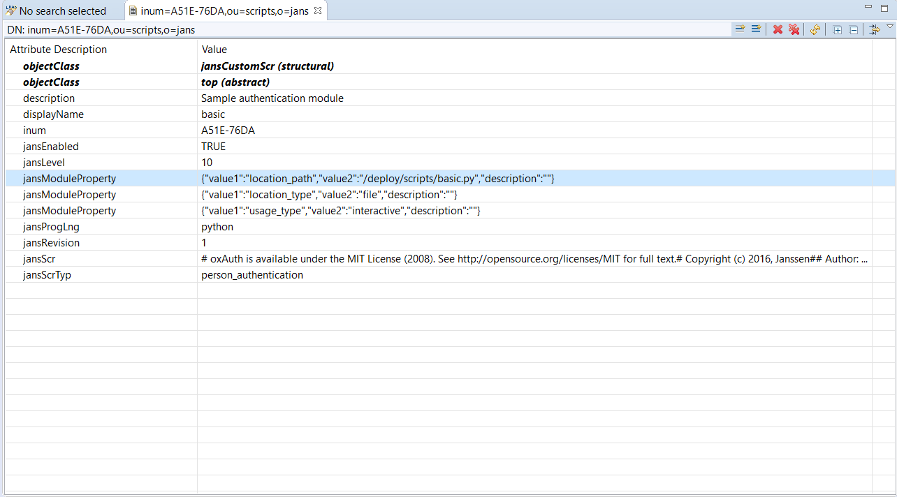

Script Debugging#
Setup#
For development the kubernetes setup must be local and accessible to the debug server address. The following steps will walk you through a setup using Minikube with docker driver, and ksync for syncing the files between local, and the container. The following instructions assume a fresh ubuntu 20.04, however the setup can be done on a different operating systems such as macOS or Windows.
System Requirements#
The minimum system requirement for running all jans services are 8GB RAM, 4 CPU, and 50GB disk. This can be dropped to 4GB RAM, 4CPU and 20GB disk space if operating with required services auth-server, and LDAP.
Setup Minikube#
-
Install Docker 18.09 or higher. For other operating systems follow the appropriate docs.
-
Install minikube, but do not start it yet.
-
Install kubectl.
-
Once Minikube is installed start it with the docker driver.
minikube start --driver=docker -
If not automatically set configure
kubectlto use the cluster:kubectl config use-context minikube -
Enable ingress on minikube
minikube addons enable ingress
Install Janssen#
-
Install Helm3
-
Install Janssen
helm repo add jans https://janssenproject.github.io/jans-cloud-native/charts kubectl create ns jans helm install jans-auth jans/jans -n jans --set global.lbIp="$(minikube ip)" --set global.provisioner="k8s.io/minikube-hostpath" --devel
Install Ksync#
Once Janssen is fully running we want to create an active sync between a local folder, and the folder that will hold the interception scripts inside the auth server container.
-
Create a folder that will hold the interception script inside the auth server container. Place the namespace where jans is installed in the env
JANS_NAMESPACEand execute:JANS_NAMESPACE=<jans-namespace> for pod in $(kubectl get pods -n $JANS_NAMESPACE --selector=APP_NAME=auth-server --output=jsonpath={.items..metadata.name}); do kubectl exec -ti $pod -n $JANS_NAMESPACE -- mkdir -p /deploy/interception-scripts-ksync done -
Install ksync
curl https://ksync.github.io/gimme-that/gimme.sh | bash -
Initialize ksync
ksync init -n <jans-namespace> -
Start ksync.
ksync watch -n <jans-namespace> & -
Open a new terminal and create a folder called
interception-scripts-ksyncmkdir -p $(pwd)/interception-scripts-ksync -
Create a spec to start syncing folders between the local system and auth server container.
ksync create --selector=APP_NAME=auth-server $(pwd)/interception-scripts-ksync /deploy/interception-scripts-ksync -n <jans-namespace> -
Check the status. Also check the terminal where the
watchcommand is running.1. Move the interception script to the local folderksync get$(pwd)/interception-scripts-ksync. In the below example we copied the following script asbasic.py:# oxAuth is available under the MIT License (2008). See http://opensource.org/licenses/MIT for full text. # Copyright (c) 2016, Janssen # # Author: Yuriy Movchan # from io.jans.service.cdi.util import CdiUtil from io.jans.as.server.security import Identity from io.jans.model.custom.script.type.auth import PersonAuthenticationType from io.jans.as.server.service import AuthenticationService from io.jans.util import StringHelper import java class PersonAuthentication(PersonAuthenticationType): def __init__(self, currentTimeMillis): self.currentTimeMillis = currentTimeMillis def init(self, customScript, configurationAttributes): print "Basic. Initialization" print "Basic. Initialized successfully" return True def destroy(self, configurationAttributes): print "Basic. Destroy" print "Basic. Destroyed successfully" return True def getAuthenticationMethodClaims(self, requestParameters): return None def getApiVersion(self): return 11 def isValidAuthenticationMethod(self, usageType, configurationAttributes): return True def getAlternativeAuthenticationMethod(self, usageType, configurationAttributes): return None def authenticate(self, configurationAttributes, requestParameters, step): authenticationService = CdiUtil.bean(AuthenticationService) if (step == 1): print "Basic. Authenticate for step 1" identity = CdiUtil.bean(Identity) credentials = identity.getCredentials() user_name = credentials.getUsername() user_password = credentials.getPassword() logged_in = False if (StringHelper.isNotEmptyString(user_name) and StringHelper.isNotEmptyString(user_password)): logged_in = authenticationService.authenticate(user_name, user_password) if (not logged_in): return False return True else: return False def prepareForStep(self, configurationAttributes, requestParameters, step): if (step == 1): print "Basic. Prepare for Step 1" return True else: return False def getExtraParametersForStep(self, configurationAttributes, step): return None def getCountAuthenticationSteps(self, configurationAttributes): return 1 def getPageForStep(self, configurationAttributes, step): return "" def getNextStep(self, configurationAttributes, requestParameters, step): return -1 def getLogoutExternalUrl(self, configurationAttributes, requestParameters): print "Get external logout URL call" return None def logout(self, configurationAttributes, requestParameters): return True
Install an IDE#
The IDE can be of choice but must contain PyDev. We chose Liclipse for this demonstration.
Once complete, start the PyDev debug server:
-
Open Liclipse
-
Install the jython jar for the interpreter.
wget https://repo1.maven.org/maven2/org/python/jython-standalone/2.7.2/jython-standalone-2.7.2.jar -
From the menu: go to
File->Open Fileand choose the interception script that will be debugged in$(pwd)/interception-scripts-ksync. -
When opening the Python file for the first time, we need to instruct Liclipse to use a specific interpreter. Follow these steps:
-
Press the "Manual Config" button in the dialog box after opening the Python file
-
Open "PyDev->Interpreters->Jython Interpreters"
-
Click the "New..." button in the right panel. Name it "Jython" and specify the interpreter executable that was downloaded previously "jython-standalone-2.7.2.jar"
-
Click "OK", then confirm the settings by clicking "OK" again, then "Apply and Close"
-
In the final dialog, confirm the settings by clicking "OK"
-
-
From the menu: go to
Window->Perspective->Open Perspective->Other..->Debug -
From the menu: go to
Pydev>Start Debug Server. Now the server should have started at port5678. Take a note of the ip of the computer running Liclipse and save it for later use. Remember that the auth server pod must be able to communicate with this ip. If you have followed the instructions above and installed minikube on your local computer which is the same computer Liclipse is operating on you should be able to reach it from within the pods.
Development & Debugging#
Now we are ready to perform script development and debugging. Here is a quick overview:
-
Enable remote debugging on the
jans-authservice. -
Instruct the auth server to load the script from the file system instead of LDAP.
-
Add debug instructions to the script.
-
Execute the script.
Enable Remote Debugging in jans-auth#
In order to enable remote debugging in the jans-auth process, open /etc/default/jans-auth in your favorite text editor. The default JAVA_OPTIONS variable is as follows:
JAVA_OPTIONS="-server
-Xms256m -Xmx928m -XX:+DisableExplicitGC
-Djans.base=/etc/jans -Dserver.base=/opt/jans/jetty/jans-auth
-Dlog.base=/opt/jans/jetty/jans-auth -Dpython.home=/opt/jython"
Modify to this:
JAVA_OPTIONS="-server -Xms256m -Xmx928m -XX:+DisableExplicitGC
-Djans.base=/etc/jans -Dserver.base=/opt/jans/jetty/jans-auth
-Dlog.base=/opt/jans/jetty/jans-auth -Dpython.home=/opt/jython
-Dorg.eclipse.jetty.server.Request.maxFormContentSize=50000000
-Xrunjdwp:transport=dt_socket,server=y,suspend=n,address=5005"
The last line will enable remote debug on port 5005. Now restart the jans-auth service.
# To list all jans processes
systemctl list-units --all "jans*"
# On Ubuntu, the service name is jans-auth.service
systemctl restart jans-auth.service
If you are running Jans on a local VM or anywhere that is not the same as the machine that will be debugging, you will need to set up an SSH tunnel on port 5005. Execute the following command:
ssh -L 5005:localhost:5005 <username>@<host>
This will cause your local host's port 5005 to listen on the remote server's port 5005. Now you can use your favorite IDE and set up the remote debugger to connect to localhost:5005.
Enable remote debug in Jython Custom Script#
For Jython scripts, we need additional steps to enable breakpoints.
-
After the import section, add:
REMOTE_DEBUG = True if REMOTE_DEBUG: try: import sys import pydevd except ImportError as ex: print "Failed to import pydevd: %s" % ex raise -
Add the following lines wherever breakpoints are needed:
if REMOTE_DEBUG: pydevd.settrace('localhost', port=5678, stdoutToServer=True, stderrToServer=True)
Sample Scenario#
-
Copy the below script to
$(pwd)/interception-scripts-ksync/basic.py# oxAuth is available under the MIT License (2008). See http://opensource.org/licenses/MIT for full text. # Copyright (c) 2016, Janssen # # Author: Yuriy Movchan # from io.jans.service.cdi.util import CdiUtil from io.jans.as.server.security import Identity from io.jans.model.custom.script.type.auth import PersonAuthenticationType from io.jans.as.server.service import AuthenticationService from io.jans.util import StringHelper import java class PersonAuthentication(PersonAuthenticationType): def __init__(self, currentTimeMillis): self.currentTimeMillis = currentTimeMillis def init(self, customScript, configurationAttributes): print "Basic. Initialization" print "Basic. Initialized successfully" return True def destroy(self, configurationAttributes): print "Basic. Destroy" print "Basic. Destroyed successfully" return True def getAuthenticationMethodClaims(self, requestParameters): return None def getApiVersion(self): return 11 def isValidAuthenticationMethod(self, usageType, configurationAttributes): return True def getAlternativeAuthenticationMethod(self, usageType, configurationAttributes): return None def authenticate(self, configurationAttributes, requestParameters, step): authenticationService = CdiUtil.bean(AuthenticationService) if (step == 1): print "Basic. Authenticate for step 1" identity = CdiUtil.bean(Identity) credentials = identity.getCredentials() user_name = credentials.getUsername() user_password = credentials.getPassword() logged_in = False if (StringHelper.isNotEmptyString(user_name) and StringHelper.isNotEmptyString(user_password)): logged_in = authenticationService.authenticate(user_name, user_password) if (not logged_in): return False return True else: return False def prepareForStep(self, configurationAttributes, requestParameters, step): if (step == 1): print "Basic. Prepare for Step 1" return True else: return False def getExtraParametersForStep(self, configurationAttributes, step): return None def getCountAuthenticationSteps(self, configurationAttributes): return 1 def getPageForStep(self, configurationAttributes, step): return "" def getNextStep(self, configurationAttributes, requestParameters, step): return -1 def getLogoutExternalUrl(self, configurationAttributes, requestParameters): print "Get external logout URL call" return None def logout(self, configurationAttributes, requestParameters): return True -
Make sure to have an LDAP browser available. We recommend Apache Directory Studio.
-
Port forward the opendj pod.
kubectl port-forward jans-opendj-0 -n <jans-namespace> 1636:1636 --address 0.0.0.0 -
Create a connection to the ldap browser. The default password will be
Test1234#if not changed in the helm install command.
-
Inside the browser navigate to
o=jans, ou=scripts. Right click onou=scriptsand click onQuick Search. Inside the pop up box that appears fillReturning AttributeswithdisplayName, and pressApply and Close -
In the results that appear click on the
Dnthat has adisplayNameofbasic.
-
Choose to load the script from file instead of db. Inside the browser change
jansModulePropertywith value{"value1":"location_type","value2":"db","description":""}to{"value1":"location_type","value2":"file","description":""} -
Specify the
Script Pathlocation to the location of the folder inside auth server pods:/deploy/interception-scripts-ksync/basic.py. Right-click the upperjansModulePropertyand clickNew Value. A new entry forjansModulePropertywill be created. Insert the following for the value:{"value1":"location_path","value2":"/deploy/interception-scripts-ksync/basic.py","description":""} -
Enable the script by settings
jansEnabledtotrue. The following is an example of how the basic script entry should look.
-
Check the following log inside the the auth-server container to verify that auth server loaded the script properly:
/opt/jans/jetty/jans-auth/logs/jans-auth_script.log. It should look like this:kubectl exec -ti <auth-server-pod-name> -n <jans-namespace> -- tail -f /opt/jans/jetty/jans-auth/logs/jans-auth_script.logYou should find the following in the log:
... (PythonService.java:239) - Basic. Initialization ... (PythonService.java:239) - Basic. Initialized successfully -
Download the jython jar for the interpreter.
wget https://repo1.maven.org/maven2/org/python/jython-standalone/2.7.2/jython-standalone-2.7.2.jar -
From the IDE (Liclipse) menu: navigate to
File->Open Fileand choose the interception script that will be debugged in$(pwd)/interception-scripts-ksync/basic.py -
When opening the Python file for the first time, we need to instruct Liclipse to use a specific interpreter. Follow these steps:
-
Press the "Manual Config" button in the dialog box after opening the Python file
-
Open "PyDev->Interpreters->Jython Interpreters"
-
Click the "New..." button in the right panel. Name it "Jython" and specify the interpreter executable that was downloaded previously "jython-standalone-2.7.2.jar"
-
Click "OK", then confirm the settings by clicking "OK" again, then "Apply and Close"
-
In the final dialog, confirm the settings by clicking "OK"
-
-
Open basic.py in a file editor. After the import section, add the following lines to load the PyDev libraries:
REMOTE_DEBUG = True if REMOTE_DEBUG: try: import sys import pydevd except ImportError as ex: print "Failed to import pydevd: %s" % ex raise -
Add this break condition to the first line in the authenticate method. Place the ip of the maching running the ide , here liclipse i.e
192.168.140.2.if REMOTE_DEBUG: pydevd.settrace('<ip-of-machine-running-ide>', port=5678, stdoutToServer=True, stderrToServer=True) -
Save
basic.py -
Within one minute, the auth server should load the changed file. Check the following log file again to make sure there are no load errors:
/opt/jans/jetty/jans-auth/logs/jans-auth_script.log -
To check if the script works, update the default authentication method to Basic Authentication. Preform this in the LDAP browser. Navigate to
o=jans,ou=configuration. Change thejansAuthModetobasicinstead ofsimple_password_auth. -
After executing
pydevd.settracethe script will transfer execution control to the PyDev server in Liclipse. You can use any debug commands. For example: Step Over (F6), Resume (F8), etc -
After debugging is finished, resume script execution to transfer execution control back to the auth server.